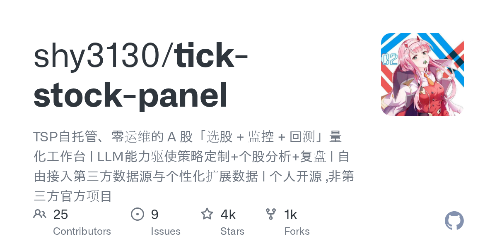

03 GitHub · shy3130 최근 활동 2026.09.06
A주 선별과 감시를 한 작업대로 묶은 패널
스타 4,382 · 이번 주 +1 · Python · MIT 사내 사용 가능 · 테스트 없음 · 예제 없음 · AGENTS.md 있음

이 저장소는 개발자보다는 직접 운용해 보려는 개인과 소규모 팀을 겨냥한다. 다만 README는 초보자에게 우회하라고 적었다. 즉시 배포 가능한 컨테이너를 제공하고, 데이터 소스와 AI 기능은 필요에 따라 붙인다. 종목 선별과 실시간 감시, 사후 회고를 한 UI에 두려는 목적이 뚜렷하다.
무엇을 하는 물건인가
이 저장소는 A주 선별, 감시, 회고, 백테스트를 묶은 자가 호스팅 작업대다. 종목을 고르고 감시 규칙을 걸고, 장이 끝난 뒤 결과를 다시 확인하는 흐름을 같은 화면에서 처리한다. 데이터 소스는 고정하지 않고 플러그인처럼 바꿀 수 있다. 여러 대시보드와 엑셀을 오가던 일을 한 관제실로 모아 둔 느낌에 가깝다.
스펙과 도입 조건
- 언어는 Python이며 프런트엔드는 React와 TypeScript를 쓴다.
- 개발 모드 전제 조건은 Python 3.11 이상, Node 20 이상, uv, pnpm이다.
- 설치 형태는 GHCR Docker 이미지, Docker Compose, 개발 모드 실행을 지원한다.
- 단일 컨테이너로 배포한다.
- TickFlow API 키는 비워 둘 수 있으며, 이 경우 일부 무료 모드로 동작한다.
- AI 기능은 외부 AI API 키를 넣을 때만 켜진다.
- 라이선스는 MIT다.
- 릴리스 태그는 없다.
이럴 때 쓰면 좋다
- 자산운용 지원 조직이 장중 가격 이상 징후와 신호를 한 페이지에서 보고 메신저 알림까지 받고 싶을 때 맞는다.
- 리서치팀이 전략 후보를 과거 데이터로 빠르게 돌려 보고 결과를 CSV로 내보내 재검토하려 할 때 유용하다.
- 시장 모니터링 담당자가 장 마감 뒤 주요 종목과 테마 흐름을 자동 회고 자료로 남기고 싶을 때 쓸 수 있다.
핵심 기능
- 25개 내장 전략과 사용자 정의 신호, 분 단위 전략으로 종목을 선별한다.
- 가격, 전략 신호, 개별 종목, 이상 움직임을 조건식으로 감시하고 음성이나 Feishu로 알린다.
- 회고와 백테스트, 요인 분석, 보유 종목 관리, 개별 종목 AI 분석을 제공한다.
왜 지금 주목받나
이 도구는 데이터 소스를 한곳에 고정하지 않고, 필요한 기능에 맞는 소스로 나눠 쓴다. 일봉, 분봉, 실시간, 재무, 호가 같은 데이터 묶음마다 맞는 소스를 고르게 했다. 그래서 특정 벤더를 바꿔도 지표나 백테스트의 계산 흐름을 유지하려는 의도가 보인다. AI 추천주나 상한가 예측은 내장하지 않겠다고 선을 그은 점도 특징이다.
운영 방식도 비교적 단순하다. GHCR 이미지를 바로 실행할 수 있고, 컨테이너 안에 프런트엔드 결과물을 같이 넣는다. 단, Codex 로그인 정보 읽기, 외부 데이터 소스 약관 준수, 일부 플러그인 미포함 같은 제약이 있다. 개인 오픈소스로 유지된다고 밝혔고 상업적 사용 금지도 적어 두었다.
| 구성 요소 | 선택 기술 |
|---|---|
| 백엔드 | FastAPI, Pydantic v2, APScheduler, sse-starlette |
| 데이터 | Polars, DuckDB, Parquet |
| 백테스트 | 자체 엔진, vectorbt 일부 |
| 데이터 소스 | TickFlow SDK, fuyao, stock-sdk 예시 플러그인, YAML 사용자 정의 소스 |
| AI | OpenAI 호환 API, DeepSeek, 통의, Ollama 등 |
| 배포 | Docker 2단계 빌드, 단일 컨테이너 |
사내 도입 체크
- AI 기능은 외부 AI API 키를 넣을 때만 작동한다. 키를 비우면 AI 없이도 일부 기능을 쓸 수 있다.
- TickFlow와 fuyao 같은 외부 데이터 소스를 연결하면 조회 데이터와 질의 조건이 외부로 나간다. 반출 범위 확인이 필요하다.
- 유지보수 주체는 개인 개발자 중심이다. 상용 지원 체계는 확인이 필요하다.
- 스크리너, 감시, 백테스트, 시장 대시보드는 일부 상용 HTS나 리서치 플랫폼으로 대체할 수 있다.
주요 용어
원문 정보
제목: shy3130/tick-stock-panel
최근 활동: 2026.09.06
출처 URL: https://github.com/shy3130/tick-stock-panel